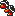

SUPER MARIO BROS. 3
Wiki
Magic Whistles
World 9 - Warp Zone
| Magic Whistles | Location | Description |
|---|---|---|
| World 1-3 |
Obtained by holding the down button on while standing on the white block at the end of the level, dropping the player behind the background, and then quickly getting behind the black curtain at the end of the level before the white block's effect wears off. Behind the curtain is a secret Toad House, whose single box contains the first Magic Whistle. |
|
| World 1-  |
Obtained by flying above the ceiling at the end of the first room, where there is a door hidden above the top of the screen. The door leads to a small secret room where a treasure box contains the second Magic Whistle. However, clearing the fortress this way will not open its lock on the map. |
|
| World 2- |
Obtained by first defeating the Boomerang Bro that gives out a Hammer. The Hammer must be used to break the rock at the top right of the map screen, opening a secret passage behind a palm tree. The passage contains a Toad House and a pair of Fire Brothers. Defeating both Fire Brothers will award the player the third and final Magic Whistle. |